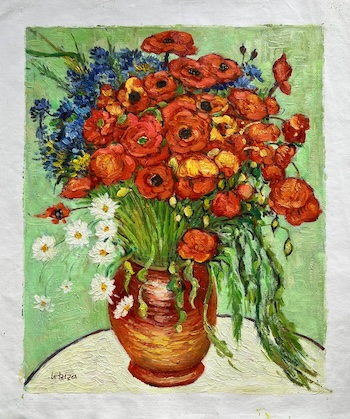

My Hometown Map
This interactive map shows notable locations in and around Orinda, CA including restaurants, cafes, parks, and schools.
Reflection
My design inspiration stemmed from Red Poppies and Daisies by Vincent van Gogh. Van Gogh’s painting uses primarily hues of blue, red, and green. I based my map design colors on those displayed in the image above. When my map is zoomed out, the majority of the world is green and tan with burnt red lines representing roads, tunnels, bridges, etc. This represents the neutral table, white daisies, green stems and background, and red poppies. When my map is zoomed in, more blue is shown due to the street names and key locations. This correlates to the small pop of blue flowers in the painting. The mood of my map is calm, realistic, and easy to digest. By using more natural, earthy tones, the map is easier to understand, especially at higher zoom levels.

I found it challenging to perfectly customize my map at different zoom levels. I figured out what I liked best by trial and error. I wanted the map to look darker as you zoomed in by making the wording blue. As the viewer zooms in, I designed it so the map would show the individual streets, street names, and business names. When zoomed out, the map shows a basic representation of the landscape and as you zoom in, the map gets more detailed.
I also found it challenging to for the details of the map to properly link from the python file to the html file. I used AI to fix these problems and correctly show the details of the map, not just the specific locations as it had previously. I also used AI guidance to help me add symbols to my map. This created symbol markers that are easily clicked on and color coded per location type. Overall, through trial and error and AI assitance and planning, I successfully learned how to combine the different elements.